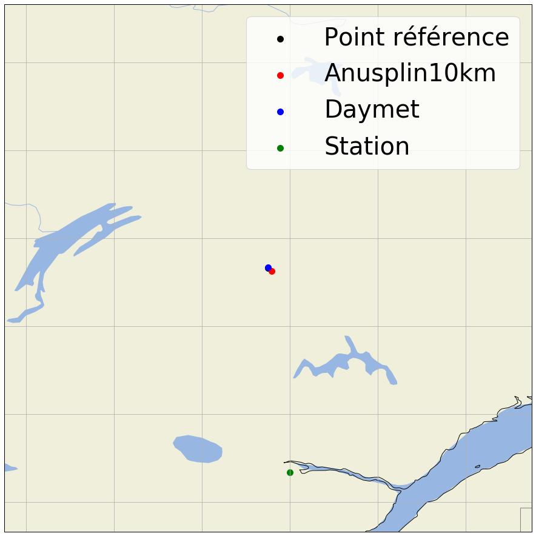
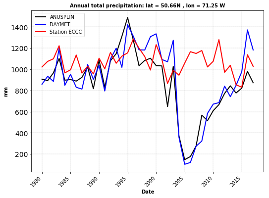
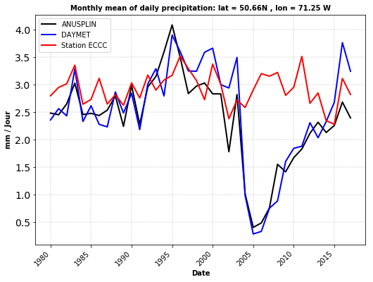
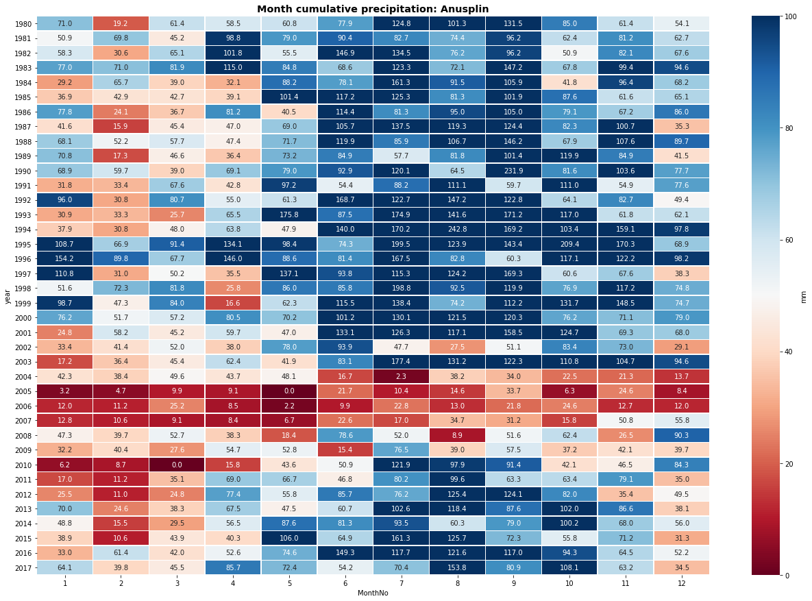
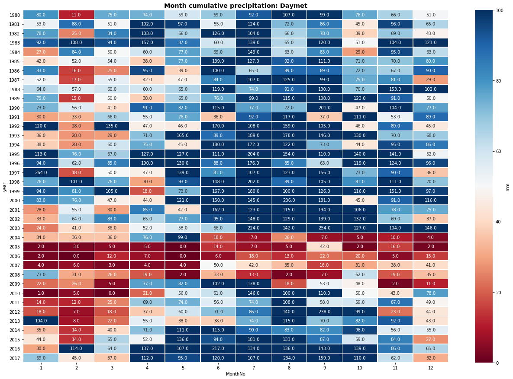
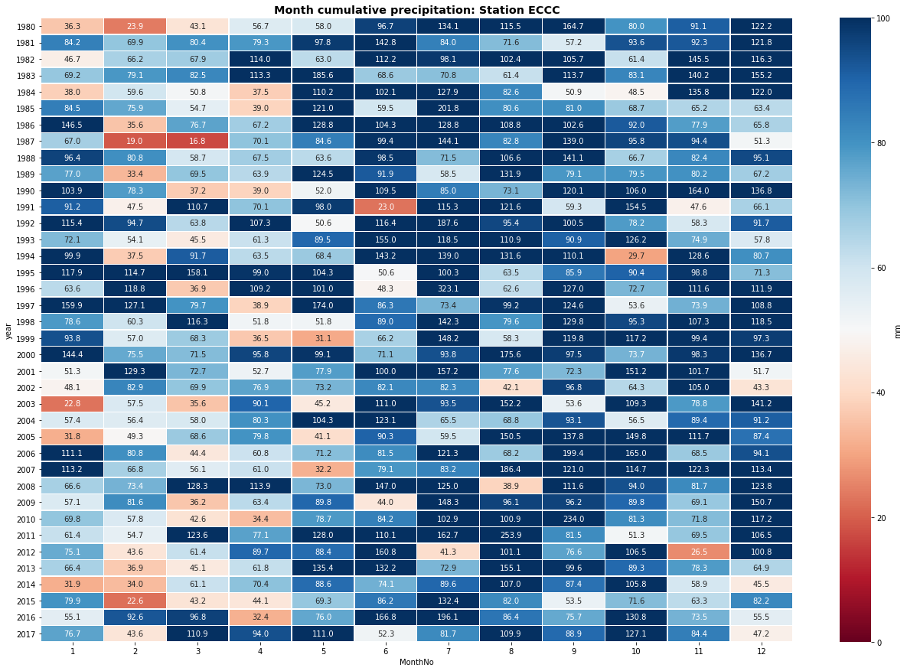

ANUSPLIN
blablabla
Courte analyse sur DAYMET / ANUSPLIN et une station d'ECCC
Objectifs:
- Travail sur les données ANUSPLIN et Daymet pour les années 2000 à 2010 (précipitation totale) autour des latitudes 50,66°N et 71,25°W
On importe les librairies et on définit nos conditions initiales.
from netCDF4 import Dataset,num2date
import numpy as np
import pandas as pd
import datetime
from datetime import date, timedelta
from dateutil.relativedelta import relativedelta
import Indices_Precipitation
from codes_station import get_closed_station_precip as get_Stat
import plot_grids
import matplotlib.pylab as plt
import warnings; warnings.filterwarnings(action='once')
import seaborn as sns
from matplotlib import gridspec
import warnings
warnings.filterwarnings("ignore")
rep_anus = 'J:/DONNEES_AMERIQUE_DU_NORD/ANUSPLIN_10km/Netcdf/all_domaine/Daily/'
rep_daymet = 'K:/PROJETS/PROJET_NAWRES/DAYMET_full_BOX/'
rep_station = 'K:/PROJETS/PROJET_NAWRES/DAYMET_full_BOX/'
yeari=1980
monthi=1
yearf = 2017
monthf = 12
lati = 50.66
loni = -71.25
Les fonctions suivantes nous permettrons d'extraire le point de grille le plus proche d'un fichier Netcdf et d'incrémenter sur les mois.
def getclosest_ij(lats,lons,latpt,lonpt):
# find squared distance of every point on grid
dist_sq = (lats-latpt)**2 + (lons-lonpt)**2
# 1D index of minimum dist_sq element
minindex_flattened = dist_sq.argmin()
# Get 2D index for latvals and lonvals arrays from 1D index
return np.unravel_index(minindex_flattened, lats.shape)
def add_month(now):
try:
then = (now + relativedelta(months=1)).replace(day=now.day)
except ValueError:
then = (now + relativedelta(months=2)).replace(day=1)
return then
day_start=1
day_end = pd.date_range('{}-{}'.format(yearf, monthf), periods=1, freq='M').day.tolist()[0]
start=datetime.datetime(yeari,monthi,day_start)
end=datetime.datetime(yearf,monthf,day_end)
d0 = date(yeari, monthi, day_start)
d1 = date(yearf, monthf, day_end)
delta = d1 - d0
nb_days = delta.days+1
On travaille sur les points de grille d'ANUSPLIN.
# Début de notre boucle temporelle sur anusplin
i=0
IND = []
incr=start
while incr <= end:
filename= rep_anus + 'ANUSPLIN_10km_preacc_' + str(incr.year) + '_{:02d}'.format(incr.month) + '.nc'
f = Dataset(filename)
# print(f.variables.keys()) # get all variable names
var = f.variables['daily_precipitation_accumulation']
#print(temp)
#temp.dimensions
#temp.shape
lat, lon = f.variables['latitude'], f.variables['longitude']
#print(lat)
#print(lon)
#print(lat[:])
# extract lat/lon values (in degrees) to numpy arrays
latvals = lat[:]; lonvals = lon[:]
# a function to find the index of the point closest pt
# (in squared distance) to give lat/lon value.
iy_min, ix_min = getclosest_ij(latvals, lonvals, lati, loni)
#print(iy_min)
#print(ix_min)
IND.append(var[:,iy_min,ix_min])
lat_a, lon_a = float(lat[iy_min,ix_min]), float(lon[iy_min,ix_min])
incr=add_month(incr)
flattened_list = []
flattened_list = [y for x in IND for y in x]
start=datetime.datetime(yeari,monthi,day_start)
TIME=[]
for i in range(0,nb_days,1):
# TIME.append((start+timedelta(days=i)).strftime("%Y-%m-%d"))
TIME.append((start+timedelta(days=i)))
dataFrame_ANUSPLIN = pd.DataFrame({'Date': TIME, 'Preacc': flattened_list}, columns = ['Date','Preacc'])
dataFrame_ANUSPLIN = dataFrame_ANUSPLIN.set_index('Date')
On fait de même sur les données de DAYMET.
# Début de notre boucle temporelle sur daymet
i=0
IND = []
TIME=[]
for year in range(yeari,yearf+1):
filename= rep_daymet + 'prcp_' + str(year) + '_DAYMET_subset.nc4'
f = Dataset(filename)
# print(f.variables.keys()) # get all variable names
var = f.variables['prcp']
#var.dimensions
#var.shape
lat, lon = f.variables['lat'], f.variables['lon']
#print(lat)
#print(lon)
#print(lat[:])
# extract lat/lon values (in degrees) to numpy arrays
latvals = lat[:]; lonvals = lon[:]
# a function to find the index of the point closest pt
# (in squared distance) to give lat/lon value.
iy_min, ix_min = getclosest_ij(latvals, lonvals, lati, loni)
lat_d, lon_d = float(lat[iy_min,ix_min]), float(lon[iy_min,ix_min])
#print(iy_min)
#print(ix_min)
IND.append(var[:,iy_min,ix_min])
nctime = f['time']
test = pd.DataFrame({'DateTime': num2date(nctime[:], nctime.units, nctime.calendar)})
test = test['DateTime'].mask(test['DateTime'].dt.year == 2011,
test['DateTime'] + pd.offsets.DateOffset(year=year))
TIME.append(test)
flattened_list = []
flattened_list = [y for x in IND for y in x]
flattened_time = []
flattened_time = [y for x in TIME for y in x]
dataFrame_DAYMET = pd.DataFrame({'Date': flattened_time, 'Preacc': flattened_list}, columns = ['Date','Preacc'])
dataFrame_DAYMET = dataFrame_DAYMET.set_index('Date')
On va chercher la station d'ECCC la plus proche et extraire les données en utilisant la fonction get_closed_station_precip.
# Données de la station la plus proche
dataFrame_STATION, df_station = get_Stat(lati, loni, yeari, yearf)
Visualisation des sites:
print("####################")
print("La station suivant sera extraire: ")
print(df_station)
lat_s = float(df_station.iloc[7].values)
lon_s = float(df_station.iloc[8].values)
dataFrame_STATION = dataFrame_STATION.loc[:,'variable']
grids_lat = []
grids_lon = []
grids_name = []
grids_lat.append(lati)
grids_lat.append(lat_a)
grids_lat.append(lat_d)
grids_lat.append(lat_s)
grids_lon.append(loni)
grids_lon.append(lon_a)
grids_lon.append(lon_d)
grids_lon.append(lon_s)
grids_name.append('Point référence')
grids_name.append('Anusplin10km')
grids_name.append('Daymet')
grids_name.append('Station')
plot_grids.plot_closed_points(grids_lat, grids_lon, grids_name, 'Precipitation')
####################
La station suivant sera extraire:
64
Prov QC
nom de la station BAGOTVILLE
stnid 7060400
année déb. 1876
mois déb. 1
année fin. 2017
mois fin. 12
lat (deg) 48.3333
long (deg) -71
élév (m) 159
stns jointes Yes
50.66
-71.25
50.625
-71.20833587646484
50.66544723510742
-71.25354766845703
48.333333333333336
-71.0

On va calculer les indices de précipitation.
#################################### Calcul des indices mensuels
resamp_preacc_A = dataFrame_ANUSPLIN.resample('M').agg([Indices_Precipitation.PrecTOT, Indices_Precipitation.MOY])
resamp_preacc_A = resamp_preacc_A.loc[:,'Preacc']
resamp_preacc_A.head()
resamp_preacc_D = dataFrame_DAYMET.resample('M').agg([Indices_Precipitation.PrecTOT, Indices_Precipitation.MOY])
resamp_preacc_D = resamp_preacc_D.loc[:,'Preacc']
resamp_preacc_D.head()
resamp_preacc_S = dataFrame_STATION.resample('M').agg([Indices_Precipitation.PrecTOT, Indices_Precipitation.MOY])
resamp_preacc_S.head()
#################################### Calcul des indices annuels
TIME=[]
for y in range(yeari,yearf+1,1):
TIME.append(y)
annual1 = []
annual2 = []
df_annual_A = []
incr= date(yeari, 1, 1)
end = date(yearf, 12, 31)
while incr <= end:
current_year = str(incr.year)
annual1.append(Indices_Precipitation.PrecTOT(dataFrame_ANUSPLIN[current_year].values))
annual2.append(Indices_Precipitation.MOY(dataFrame_ANUSPLIN[current_year].values))
incr = incr + relativedelta(years=1)
df_annual_A = pd.DataFrame({'Date': TIME,'Annual PrecTOT': annual1, 'Annual Mean': annual2}, columns = ['Date','Annual PrecTOT', 'Annual Mean'])
df_annual_A.head()
annual1 = []
annual2 = []
df_annual_D = []
incr= date(yeari, 1, 1)
end = date(yearf, 12, 31)
while incr <= end:
current_year = str(incr.year)
annual1.append(Indices_Precipitation.PrecTOT(dataFrame_DAYMET[current_year].values))
annual2.append(Indices_Precipitation.MOY(dataFrame_DAYMET[current_year].values))
incr = incr + relativedelta(years=1)
df_annual_D = pd.DataFrame({'Date': TIME,'Annual PrecTOT': annual1, 'Annual Mean': annual2}, columns = ['Date','Annual PrecTOT', 'Annual Mean'])
df_annual_D.head()
annual1 = []
annual2 = []
df_annual_S = []
incr= date(yeari, 1, 1)
end = date(yearf, 12, 31)
while incr <= end:
current_year = str(incr.year)
annual1.append(Indices_Precipitation.PrecTOT(dataFrame_STATION[current_year].values))
annual2.append(Indices_Precipitation.MOY(dataFrame_STATION[current_year].values))
incr = incr + relativedelta(years=1)
df_annual_S = pd.DataFrame({'Date': TIME,'Annual PrecTOT': annual1, 'Annual Mean': annual2}, columns = ['Date','Annual PrecTOT', 'Annual Mean'])
df_annual_S.head()
.dataframe tbody tr th {
vertical-align: top;
}
.dataframe thead th {
text-align: right;
}
On peut maintenant visualiser nos résultats.
#################################### tracé des séries temporelles
color = ['black','blue', 'red']
fig = plt.figure(figsize=(10, 6))
gs = gridspec.GridSpec(1, 2, width_ratios=[6, 1])
gs.update( wspace=0.04)
ax1 = plt.subplot(gs[0])
plt.rcParams["figure.figsize"]=[16,9] #
plt.plot(df_annual_A['Date'].values, df_annual_A['Annual PrecTOT'][:], label='ANUSPLIN', linewidth=2, c=color[0])
plt.plot(df_annual_D['Date'].values, df_annual_D['Annual PrecTOT'][:], label='DAYMET', linewidth=2, c=color[1])
plt.plot(df_annual_S['Date'].values, df_annual_S['Annual PrecTOT'][:], label='Station ECCC', linewidth=2, c=color[2])
ax1.grid(axis = "x", linestyle = "--", color='black', linewidth=0.25, alpha=0.5)
ax1.grid(axis = "y", linestyle = "--", color='black', linewidth=0.25, alpha=0.5)
plt.setp(plt.gca().get_xticklabels(), rotation=45, ha="right")
plt.xlabel('Date', fontsize=10, color='black', weight='semibold')
plt.ylabel('mm', fontsize=10, color='black', weight='semibold')
plt.title('Annual total precipitation: lat = 50.66N , lon = 71.25 W', fontsize=10, color='black', weight='semibold')
ax1.set_facecolor('white')
plt.yticks( fontsize=14)
plt.legend(loc='upper left', ncol=1, bbox_to_anchor=(0, 1, 1, 0),fontsize =10)
plt.savefig("Annual_precipitation_Time_serie_"+str(yeari)+"-"+str(yearf)+".png", dpi=300, bbox_inches='tight') # bbox_inches= : option qui permet de propostionner le graphique lors de l'enregistrement
plt.show()
color = ['black','blue', 'red']
fig = plt.figure(figsize=(10, 6))
gs = gridspec.GridSpec(1, 2, width_ratios=[6, 1])
gs.update( wspace=0.04)
ax1 = plt.subplot(gs[0])
plt.rcParams["figure.figsize"]=[16,9] #
plt.plot(df_annual_A['Date'].values, df_annual_A['Annual Mean'][:], label='ANUSPLIN', linewidth=2, c=color[0])
plt.plot(df_annual_D['Date'].values, df_annual_D['Annual Mean'][:], label='DAYMET', linewidth=2, c=color[1])
plt.plot(df_annual_S['Date'].values, df_annual_S['Annual Mean'][:], label='Station ECCC', linewidth=2, c=color[2])
ax1.grid(axis = "x", linestyle = "--", color='black', linewidth=0.25, alpha=0.5)
ax1.grid(axis = "y", linestyle = "--", color='black', linewidth=0.25, alpha=0.5)
plt.setp(plt.gca().get_xticklabels(), rotation=45, ha="right")
plt.xlabel('Date', fontsize=10, color='black', weight='semibold')
plt.ylabel('mm / Jour', fontsize=10, color='black', weight='semibold')
plt.title('Monthly mean of daily precipitation: lat = 50.66N , lon = 71.25 W', fontsize=10, color='black', weight='semibold')
ax1.set_facecolor('white')
plt.yticks( fontsize=14)
plt.legend(loc='upper left', ncol=1, bbox_to_anchor=(0, 1, 1, 0),fontsize =10)
plt.savefig("Monthly_mean_precipitation_ANUSPLIN_"+str(yeari)+"-"+str(yearf)+".png", dpi=300, bbox_inches='tight') # bbox_inches= : option qui permet de propostionner le graphique lors de l'enregistrement
plt.show()


### heat map
resamp_preacc_A['year'] = resamp_preacc_A.index.year
resamp_preacc_A['MonthNo'] = resamp_preacc_A.index.month
resamp_preacc_A = resamp_preacc_A.pivot_table(values='PrecTOT',index='year',columns=['MonthNo'])
ax = plt.axes()
sns.heatmap(resamp_preacc_A, cmap='RdBu', linewidths=0.5, annot=True , ax = ax,vmin=0, vmax=100,center=50, fmt='.1f',yticklabels=True, cbar_kws={'label': 'mm'})
ax.set_title('Month cumulative precipitation: Anusplin', weight='bold', fontsize="x-large")
figure = ax.get_figure()
figure.set_size_inches(22, 15)
plt.savefig("Month_cumulative_precipitation_Anusplin.png", dpi=300, bbox_inches='tight') # bbox_inches= : option qui permet de propostionner le graphique lors de l'enregistrement
plt.show()
resamp_preacc_D['year'] = resamp_preacc_D.index.year
resamp_preacc_D['MonthNo'] = resamp_preacc_D.index.month
resamp_preacc_D = resamp_preacc_D.pivot_table(values='PrecTOT',index='year',columns=['MonthNo'])
ax = plt.axes()
sns.heatmap(resamp_preacc_D, cmap='RdBu', linewidths=0.5, annot=True , ax = ax,vmin=0, vmax=100,center=50, fmt='.1f',yticklabels=True, cbar_kws={'label': 'mm'})
ax.set_title('Month cumulative precipitation: Daymet', weight='bold', fontsize="x-large")
figure = ax.get_figure()
figure.set_size_inches(22, 15)
plt.savefig("Month_cumulative_precipitation_Daymet.png", dpi=300, bbox_inches='tight') # bbox_inches= : option qui permet de propostionner le graphique lors de l'enregistrement
plt.show()
resamp_preacc_S['year'] = resamp_preacc_S.index.year
resamp_preacc_S['MonthNo'] = resamp_preacc_S.index.month
resamp_preacc_S['PrecTOT']
resamp_preacc_S = resamp_preacc_S.pivot_table(values='PrecTOT',index='year',columns=['MonthNo'])
ax = plt.axes()
sns.heatmap(resamp_preacc_S, cmap='RdBu', linewidths=0.5, annot=True , ax = ax,vmin=0, vmax=100,center=50, fmt='.1f',yticklabels=True, cbar_kws={'label': 'mm'})
ax.set_title('Month cumulative precipitation: Station ECCC', weight='bold', fontsize="x-large")
figure = ax.get_figure()
figure.set_size_inches(22, 15)
plt.savefig("Month_cumulative_precipitation_Station.png", dpi=300, bbox_inches='tight') # bbox_inches= : option qui permet de propostionner le graphique lors de l'enregistrement
plt.show()



Guillaume Dueymes
Data Scientist and Research Assistant
My research interests include data science, data management and climate science.